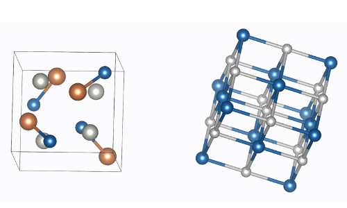
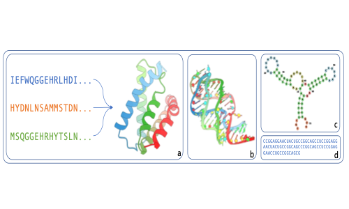
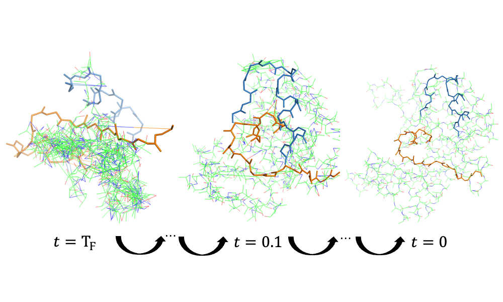

🧑🏻💻 About me
I am currently a senior undergraduate student from Mixed Class, Chu Kochen Honors College of Zhejiang University, majoring in Computer Science and Technology. My advisors are professor Chunhua Shen and Hao Chen who are affiliated to State Key Lab of CAD & CG, Zhejiang University. I had a wonderful research experience at University of Illinois at Urbana-Champaign and was honored to work with Prof. Ge Liu
I will join Carnegie Mellon University as a Ph.D. student in 2025 Fall.
I am keenly interested in research topics associated with AI for Science and various Generative Models. My prior research experience encompasses protein design, molecule design, crystal models and advanced generative models. If you are interested in my research, please feel free to please feel free to email me at shenshuaike256 at gmail dot com or shuaikes at andrew dot cmu dot edu
🔥 News
- 2025.01: 🎉🎉 One paper has been accepted by ICLR 2025, see you in Singapore.
- 2024.12: 🎉🎉 One paper has been accepted by AAAI 2025.
- 2024.06: 🎉🎉 One paper has been accepted by ICML 2024 AI for Science Workshop.
- 2024.05: 🎉🎉 One paper has been accepted by ICML 2024.
- 2024.01: 🎉🎉 The first paper I participated in was accepted by ICLR 2024.
📝 Publications

A Denoising Pre-training Framework for Accelerating Novel Material Discovery
Shuaike Shen, Ke Liu, Hao Chen†

Training Text-to-Image Flow Models on Self-Generated Data
Jiajun Fan, Shuaike Shen, Chaoran Cheng, Chumeng Liang, Ge Liu†

Online Reward-Weighted Fine-Tuning of Flow Matching with Wasserstein Regularization
Jiajun Fan, Shuaike Shen, Chaoran Cheng, Yuxin Chen, Chumeng Liang, Ge Liu†
ICLR 2025

Rethinking Biomolecule Inverse Folding via Evaluation Metrics and Decoding Paradigms
Ke Liu, Weian Mao, Shuaike Shen, Zheng Sun, Bin Xiao, Hao Chen, Lin Yuanbo Wu, Chunhua Shen†
Under review

Physics-Informed Neural Networks for Unsupervised Binding Energy Prediction
Ke Liu*, Shuaike Shen*, Hao Chen†
Under review

Floating Anchor Diffusion Model for Multi-motif Scaffolding
Ke Liu*, Shuaike Shen*, Weian Mao*, Xiaoran Jiao, Zheng Sun, Hao Chen†, Chunhua Shen†
Introduction
- A method to scaffold multiple protein functional motifs without prior knowledge. FADiff is based on a diffusion process which is modified to take into account the movement of the single motifs as independent rigid bodies.

Boost Your Crystal Model with Denoising Pre-training
Shuaike Shen*, Ke Liu*, Muzhi Zhu, Hao Chen†
Introduction
- A universal pre-training framework based on denoising can enhance the model’s ability to model crystal structures and can be migrated to any specific crystal feature extraction network.

De novo Protein Design Using Geometric Vector Field Networks
Weian Mao*, Zheng Sun*, Muzhi Zhu*, Shuaike Shen, Lin Yuanbo Wu, Hao Chen†, Chunhua Shen†
Introduction
- We propose a novel structure graph encoder, which can address the atom representation bottleneck observed in traditional IPA encoders.
🌐 Research Interests
AI for Science
-
Biomolecules Design
-
Computational Biology
Generative Models
-
Diffusion models
-
Flow Matching
🏯 Research Experience
Computer Science & Biochemistry, University of Illinois at Urbana-Champaign, Urbana, U.S.
Research Intern(May.2024 - Mar.2025), Advisors: Prof. Ge Liu & Prof. Nicholas Ching Hai Wu
Working on protein co-design and developing online Reinforcement Learning algorithm for Flow Matching models.
State Key Lab of CAD & CG, Zhejiang University, Hangzhou, China
Undergraduate Research Assistant(Oct.2022 - May.2024), Advisors: Prof. Chunhua Shen & Prof. Hao Chen
Working on protein design, Biomolecules interaction and Material science.
📖 Educations
-
Zhejiang University
Sep. 2021 - Jun. 2025(expected)
B.E. in Computer Science and Technology, Chu Kochen Honors College